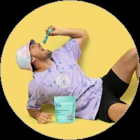

Why Water Alone Never Fixed Their Sundays, and the Five-Step Routine They Ran Instead
Two friends used to bring a grocery bag of fixes to every morning after. Here's what was in it, the one step that did the most work, and how the whole routine ended up in a single stick.

"Drinking just water does not help me with my hydration." One of our customers wrote that in a review, and it might be the most honest sentence ever written about a Sunday morning.
You know the scene. The blinds are shut. Your phone says 11:40. You already drank two big glasses of water, because that's what everyone tells you to do, and you still feel like a phone at 3% battery. The brunch you planned is now a delivery order. The run you planned is now a nap.
Mike and Connor, the two guys who started Waterboy, lived that morning more times than they'd like to admit. In their words: "Sometimes we'd go out with friends and one drink would turn into many. Next thing you know, we'd wake up with a headache and a questionable IG story. Just traded 4 hours of fun for 24 hours of misery. Not a good investment."
So they did what a lot of people do. They built a routine.
The five-step morning
Here's what the routine looked like, pulled straight from how they describe it:
- Chug a Pedialyteto put back electrolytes.
- Chew some raw gingerfor the stomach.
- Mix an Emergen-Cfor the vitamin C.
- Take L-theaninean amino acid found in tea, the "chill" step.
- Hope.Lie down. Repeat as needed.

It mostly worked. It was also ridiculous. As they put it: "the last thing you want to do when you are hungover is run your own science lab and 5 step recipe."
But here's the part they figured out along the way. Of the five steps, one was carrying most of the load. And it's the one step plain water can't do.
The step water can't do: paying back your salt
When you drink, alcohol turns down a hormone your body uses to hold on to water. Its job is to tell your kidneys, "keep it." With that signal turned down, you pee more. That's why the bathroom line at the bar never ends.
Here's what nobody mentions: what you pee out isn't only water. Sodium, potassium and magnesium go with it. These are the salts (electrolytes) your body uses to keep water where it belongs.
So by morning, you don't only owe your body water. You owe it salt. Call it a salt debt.
Saturday night is a withdrawal. A glass of water is a five-dollar deposit on a forty-dollar overdraft.
That's why two glasses of water can leave you feeling like you drank none. You paid back the water. The salt is still overdue.
Why the usual fixes come up short
Water. Pays back the water. Doesn't touch the salt.
Classic sports drinks. Made for a game on a hot field. Plenty of sugar, not much sodium for the size of the bottle.
Most electrolyte sticks. Built for an average day, not a Saturday night. Many carry under 900mg of electrolytes and a few grams of sugar.
Coffee and a breakfast sandwich. Good for morale. Not much for the debt.
The five-step routine. Covers more ground. Takes five things you won't have in your bag at 1 a.m.
So they put the routine in one stick
Mike and Connor took the routine they trusted, turned it into a powder and put it in a stick. They called it Weekend Recovery. Here's what's in each one, straight from the label:
What's in one stick
| From the old routine | In Weekend Recovery |
|---|---|
| Step 1: Pedialyte, for electrolytes | 3,205mg electrolytes, including 1,120mg sodium, 350mg potassium, 50mg magnesium |
| Step 2: raw ginger | Ginger root extract |
| Step 3: Emergen-C | Vitamin C, 500% daily value, plus B12 at 500% |
| Step 4: L-theanine | L-theanine, the amino acid found in tea |
| The sugar most drinks add | 0g sugar. Sweetened with a little organic stevia. No caffeine. |


How to use it: bookend the night
The founders' own directions are simple. Think of it as bookending the night:
- One stick the night of.Ideally while you're still out, or before bed. It has no caffeine, so it won't keep you up.
- One stick the next morning.Mix into 16 to 32 oz of water. Less water tastes bolder and saltier; more water tastes lighter.
That's the whole routine. One step at each end instead of five in the middle of your Sunday.
The honest part
Two things we'd rather tell you now than have you find out later.
It tastes salty. On purpose. That's the 1,120mg of sodium doing its job. Most people say the flavor balances it out ("There is a perfect balance between salty and sweet."), and some people mix it into a bigger bottle. A few people just don't like salty drinks, and that's fair.
It's not a miracle. The founders say it best: "It's not a miracle cure, but it's a much better way to feel less shitty for $2." It can't undo the night. It puts back what the night took out, without five trips to the pharmacy.
What people say after a weekend
I usually get one before I go to bed after a night of drinking. Sometimes I need another in the morning.
After a weekend of drinking, two of these on a Monday, and I feel fixed.
Great recovery the day after a night of drinking
Drinking just water does not help me with my hydration.
4.7 out of 5 from 10,497 reviews on waterboy.com. Individual experiences vary.
Also on the shelf at

Weekend Recovery, 12 sticks
- 3,205mg electrolytes per stick
- 0g sugar, no caffeine
- Five flavors, or a Sample Pack to try them
- Skip, change or cancel by text
- 30-day money-back guarantee
Questions people ask
Isn't this just salt water?
Mostly salt, on purpose. Sodium, potassium and magnesium are the salts a night out takes with it. Weekend Recovery adds ginger root extract, L-theanine and vitamins C and B12, with zero sugar.
When do I take it?
One the night of, ideally while you're out or before bed, and one the next morning.
Does it have caffeine or sugar?
No caffeine. 0g sugar. It's sweetened with a small amount of organic stevia.
How much water do I mix it with?
16 oz for a bolder, saltier taste. Up to 32 oz for a lighter one.
Is a lot of sodium OK for me?
Each stick has 1,120mg of sodium. If you watch your sodium or have a health condition, check with your doctor first.